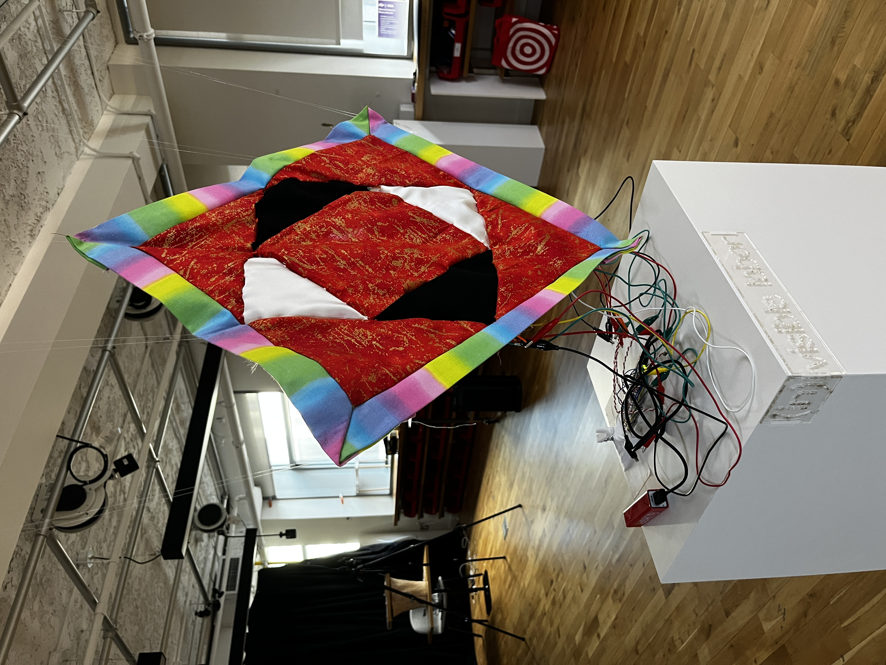

This project was the culmination of the work that was done during the NYC summer session of IMA Low Res. I wanted to combine the traditionally feminine art of quilt-making and needlework with the technologies we learned during Interface Lab to create a holistic installation. While doing my research I came upon this article on Women's Work by the Brooklyn Museum and they had a quote that perfectly encapsulated the reason why I wanted to create this project:
"Throughout the history of art, decoration and domestic handicrafts have been regarded as women’s work, and as such, not considered “high” or fine art. Quilting, embroidery, needlework, china painting, and sewing—none of these have been deemed worthy artistic equivalents to the grand mediums of painting and sculpture. The age-old aesthetic hierarchy that privileges certain forms of art over others based on gender associations has historically devalued “women’s work” specifically because it was associated with the domestic and the “feminine.”"
The piece is meant to be viewed from all angles and the experience differs depending on location. It is a commentary on both illuminating the labor that is required in cloth-making and threadcrafts through the exposed wiring and LED filament holding the quilt together as well as the individual illuminating the piece lacking the ability to appreciate the fruits of their labor.